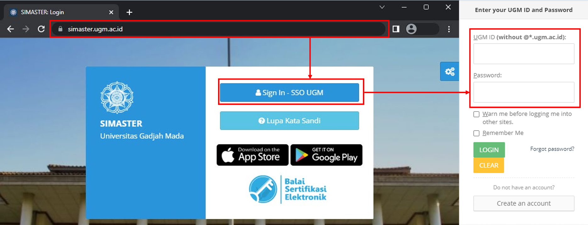
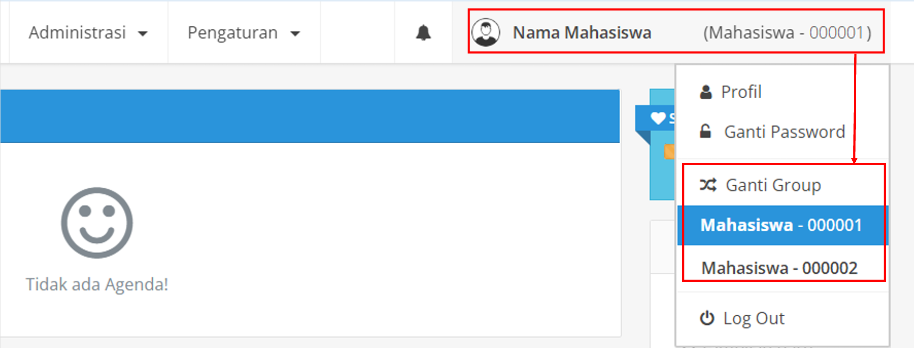
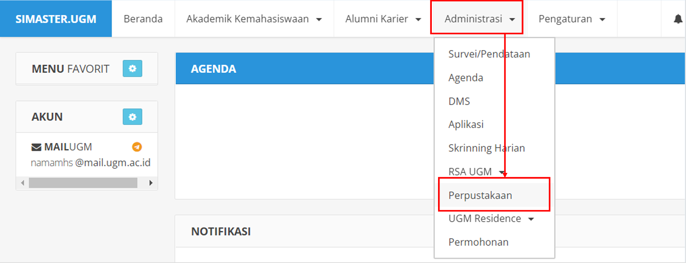
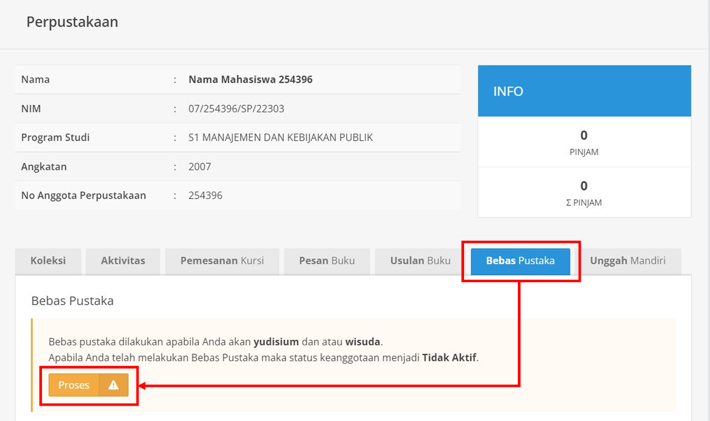
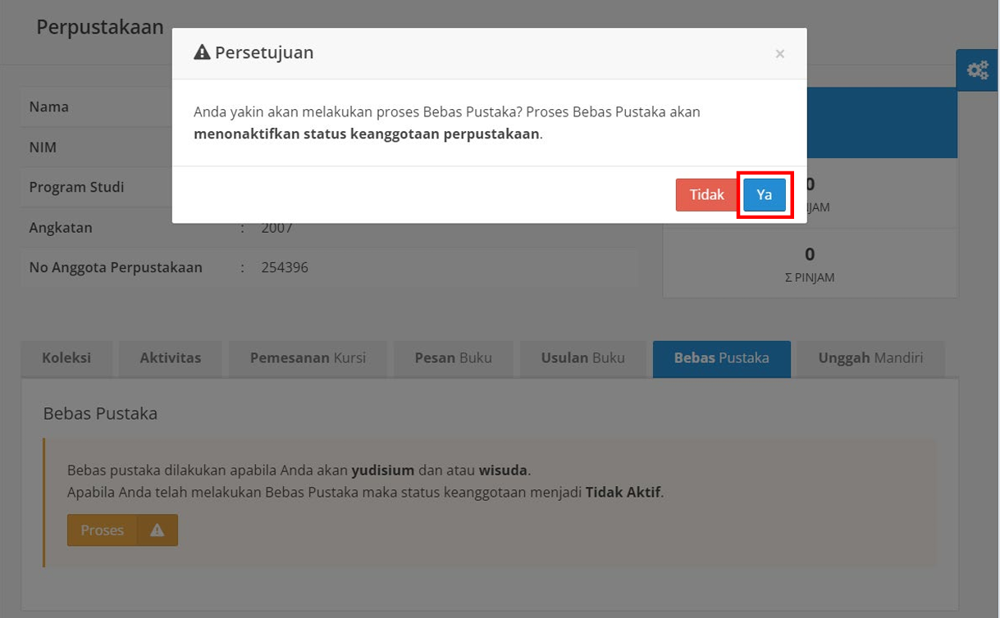
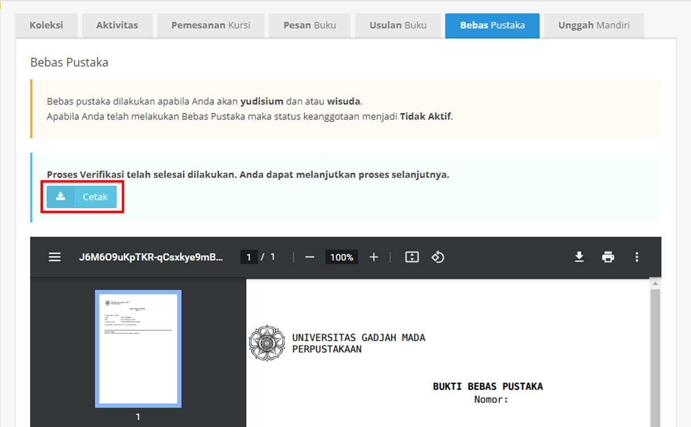
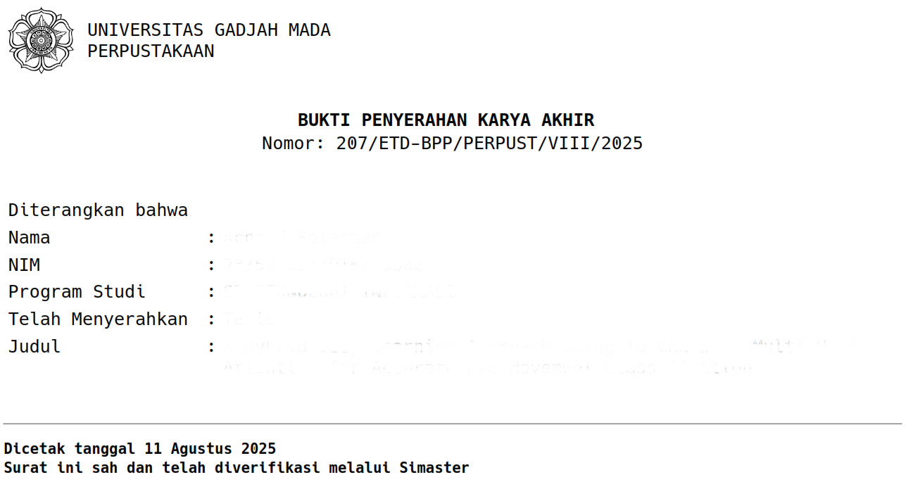

4 Standar Operasional Prosedur (SOP)
4.1 Tahapan Setelah Sidang Pendadaran
- Setelah Menyelesaikan pendadaran mahasiswa diharapkan langsung melakukan revisi sesuai masukan dari Penguji dan Pembimbing saat sidang Pendadaran.
Segera konsultasikan hasil revisi untuk mendapatkan persetujuan (jika memang sudah layak dan sesuai dengan ekspektasi penguji dan pembimbing)
Jika dirasa sudah cukup, dan seluruh dosen penguji dan pembimbing Acc atas hasil revisi anda, maka silakan mendaftar proses yudisium yang akan terjadwal secara berkala setiap hari Senin setiap bulannya. PENDAFTARAN Yudisium Maksimal hari RABU, sebelum pelaksanaan yudisium pada hari SENIN.
- Jika dalam proses yudisium anda dinyatakan lulus, baik dari sisi administrasi maupun akademik maka proses selanjutnya adalah anda MENUNGGU lembar pengesahan tesis yang akan diberikan oleh bagian akademik Pascasarjana melalui email masing-masing yang sudah tertandatangani oleh seluruh dosen dan Ketua Departemen.
- Setelah menerima lembar pengesahan tersebut mahasiswa baru dapat bergerak untuk mencari syarat lain seperti ETD Unggah Mandiri pada perpustakaan Universitas Gadjah Mada. Jika anda unggah ETD pada hari terakhir, INGAT untuk cut off lapor ke Prodi adalah jam 14.00 WIB (Jika anda lapor jam 15.00 WIB maka dipastikan tidak akan terangkut ke daftar wisudawan terdekat).
- Setelah ETD selesai maka segera lakukan daftar Pra Wisuda (Account Wisuda) melalui akun magister masing-masing sesuai dengan timeline yang ada. *) Untuk pendaftaran akun proses selanjutnya tidak perlu menunggu verifikasi, bisa dilakukan paralel dengan Jadwal lain dengan catatan telah selesai mengunggah seluruh syarat sesuai timeline yang ada.
- Setelah ETD selesai segera lengkapi syarat wisuda melalui TAUTAN G-FORM BERIKUT
- Jangan lupa mengisi data SIMASTER, khususnya isian Gama Co-Brand dan Exit Survey, karena jika keduanya belum diisi pada periode yang ditentukan maka proses pemberkasan tidak dapat dilakukan. Untuk bisa mengisi poin 8 ini menunggu koordinasi dari Pak Dulhadi.
- Jangan lupa mengisi SKPI di Simaster (WAJIB), masukkan semua bukti publikasi sebagai capaian pendukung di SIMASTER. Tata cara pengisian ikuti sesuai FT UGM (klik di sini).
PentingCatatan
Seluruh proses yang sudah dilalui dimungkinkan gagal dan dibatalkan jika ternyata dikemudian hari ditemukan adanya pelanggaran etika (misal memalsu dokumen, memalsu tanda tangan, dan perbuatan-perbuatan mal-administrasi lain yang secara sengaja dilakukan).
Dalam proses menuju finalisasi transkrip dan ijazah akan banyak sekali komunikasi dan kerja sama yang harus dilakukan antara Prodi dan Mahasiswa (ini terjadi tidak hanya di prodi ini saja, melainkan secara umum di UGM). Mohon pintu komunikasi dibuka seluas-luasnya karena perlu responsif dan sigap. Proses ini melibatkan banyak pihak sampai dengan PDDIKTI untuk penerbitan nomor PIN. Sebelumnya kami mohon maaf jika prosesnya akan sedikit berbelit dan ribet karena secara komunikasi data dari Mhs - Prodi - Univ - dan PDDIKTI masih terus dalam proses penyempurnaan. Mari kita lalui bersama semua tahapannya sehingga bisa sempurna dalam proses penerbitan transkrip dan ijazah.
4.2 Wisuda
CatatanPerhitungkan waktu kapan saudara/i ingin ikut wisuda:
Jika ingin mengikuti wisuda pada periode I, maka maksimal penyelesaian unggah mandiri ETD UGM dan pendaftaran akun melalui simaster di Prodi adalah pada tanggal 19 September.
Jika ingin mengikuti wisuda pada periode II, maka maksimal penyelesaian unggah mandiri ETD UGM dan pendaftaran akun melalui simaster di Prodi adalah pada tanggal 19 Desember.
Jika ingin mengikuti wisuda pada periode III, maka maksimal penyelesaian unggah mandiri ETD UGM dan pendaftaran akun melalui simaster di Prodi adalah pada tanggal 19 Maret.
Jika ingin mengikuti wisuda pada periode IV, maka maksimal penyelesaian unggah mandiri ETD UGM dan pendaftaran akun melalui simaster di Prodi adalah pada tanggal 19 Juni.
Pendaftaran akun melalui website simaster.
Untuk periode yang berhimpit dengan idul fitri akan disesuaikan kemudian Dimanakah Saudara/i dapat mengakses timeline kelengkapan syarat wisuda oleh Universitas? Klik di sini.
PentingNOTIFIKASI UNTUK WISUDA
Setiap tanggal 19 Januari/April/Juli/Oktober paling lambat mendaftar
4.2.1 Bebas Pustaka dan Unggah Mandiri di Simaster
CatatanKetentuan Umum
- Proses Unggah Mandiri baru dapat dilakukan setelah Anda menyelesaikan tahapan Bebas Pustaka.
- Khusus Mahasiswa Profesi: Hanya diwajibkan melakukan proses Bebas Pustaka dan tidak disyaratkan untuk melakukan Unggah Mandiri.
- Setelah proses Bebas Pustaka disetujui, status keanggotaan Perpustakaan Anda akan otomatis dinonaktifkan.
- Apabila sistem mendeteksi masih terdapat transaksi denda atau peminjaman buku, mohon segera menyelesaikannya di Perpustakaan setempat.
- Ketentuan persyaratan UNGGAH MANDIRI dapat dilihat pada link berikut: ugm.id/skunggah
4.2.2 Bebas Pustaka
Proses Bebas Pustaka
Buka halaman SIMASTER dan masukkan akun Anda.

Pilih Group yang ada di menu kanan.

Klik menu “Administrasi” kemudian “Perpustakaan”

Jika tidak memiliki tanggungan pinjaman atau denda dengan Perpustakaan, maka klik “Proses”

Pilih “Ya” pada pesan Persetujuan

Cetak “Bukti Bebas Pustaka”

4.2.3 Unggah Mandiri
CatatanKetentuan – Unggah Mandiri
- Karya akhir mahasiswa bersifat final dan dibuktikan dengan adanya surat atau lembar pengesahan yang ditandatangani atau dilegalisasi oleh pengelola Fakultas/Sekolah;
- Karya akhir mahasiswa disertai dengan lembar pernyataan bebas plagiasi bermeterai, dengan nilai sesuai ketentuan yang berlaku;
- Syarat bermeterai sebagaimana dimaksud pada poin b (ketentuan) di atas tidak berlaku bagi karya akhir yang berasal dari mahasiswa asing;
- Penamaan file karya akhir mahasiswa sesuai dengan ketentuan yang telah ditetapkan oleh Perpustakaan Universitas Gadjah Mada;
- File naskah lengkap karya akhir mahasiswa disertai bookmark atau sesuai dengan ketentuan atau panduan yang berlaku; dan
- Unggah karya akhir dilakukan sesuai batas waktu yang sudah ditentukan untuk setiap periode yudisium, yang diatur oleh Fakultas/Sekolah, atau setiap periode wisuda, yang akan diatur melalui edaran wisuda oleh Direktorat Pendidikan dan Pengajaran. Ketentuan persyaratan UNGGAH MANDIRI dapat dilihat pada link berikut: ugm.id/skunggah
4.2.4 Ketentuan Unggah Foto untuk Proses Ijazah
Kebutuhan foto cukup hanya dengan mengirimkan soft file. Silakan bisa update di data akun magister.jteti.ugm.ac.id dan juga diunggah melalui TAUTAN G-FORM BERIKUT
- Foto berwarna background putih
- Ukuran maksimal 2 MB dengan rasio 3:4 format .jpg
- Pria: Kemeja putih, dasi hitam, jas hitam (bukan jas almamater)
- Wanita: Kemeja putih, blazer hitam (bukan jas almamater)
- Bagi Wanita Berhijab: Mengenakan kemeja putih, jas hitam (bukan jas almamater), jilbab hitam dan dimasukkan dalam kemeja
- Badan dan kepala tegak sejajar menghadap depan
- Kedua daun telinga harus kelihatan bagi yang tidak berhijab
- Tidak menggunakan kacamata, cadar, masker, dan penghalang wajah lainnya
- Foto harus jelas/tajam dan tidak kabur
- Bukan foto hasil scan/repro dari HP
Contoh tampilan Foto yang valid:
Berikut diinformasikan tahapan untuk kelengkapan pemberkasan Wisuda:
Permohonan account wisuda melalui sistem magister.jteti.ugm.ac.id dilayani paling lambat H-3 sebelum poin 1 pada informasi Jadwal Wisuda Universitas Gadjah Mada (silakan cek jatuh pada tanggal berapa, lalu untuk pendaftaran akun ditutup H-3 sebelumnya).
Lengkapi persyaratannya sebagai berikut atau silakan cek langsung dalam sistemnya:
- Sudah Yudisium
- Upload Scan FC ijazah S1 yang dilegalisir/aslinya juga diperbolehkan.
- Upload Scan print-out bukti unggah ETD melalui https://simaster.ugm.ac.id/. Flow chart pengisian dapat dilihat pada link berikut <<klik di sini>>
Contoh tampilan bukti unggah ETD yang valid:

- Upload Scan seluruh file TOEFL dan TPA
- Upload Scan bukti bebas UKT yang digunakan pada syarat pendadaran
- Upload file foto sesuai ketentuan SIMASTER UGM.
- Upload Scan KTM dan KTP (dijadikan 1 file) asli
Account wisuda akan diaktifkan segera setelah periode wisuda periode sebelumnya dilaksanakan. Account Wisuda ini akan menjadi dasar Prodi untuk memproses dan mengawal pengisian data SIMASTER UGM mahasiswa. Tanpa Aktivasi “Account Wisuda” melalui magister.jteti.ugm.ac.id proses pengisian data melalui SIMASTER UGM tidak akan diproses oleh Prodi. Setelah mendaftar Account Wisuda silakan menunggu untuk nantinya akan diinvite ke dalam grup calon wisudawan oleh Pak Dulhadi melalui WA setelah pendaftaran akun ditutup.
Setelah nanti diinvite Pak Dulhadi ke dalam grup WA, maka mahasiswa baru dapat melakukan pengisian data di SIMASTER. Cek “tetangga kanan kiri” ya, jangan pasif/diam saja jika belum diinvite.
Jangan lupa untuk melengkapi isian data Gama co-brand dan biodata melalui sistem wisuda (simaster.ugm.ac.id).
4.2.5 Beberapa Kesalahan dalam Unggah Mandiri
Unggah mandiri merupakan aplikasi yang ditujukan untuk memudahkan proses penyerahan karya tulis akhir (skripsi/tugas akhir, tesis, dan disertasi) UGM sebagai salah satu syarat untuk mengikuti wisuda. Unggah mandiri dapat dilakukan melalui unggah.etd.ugm.ac.id, dan sudah diwajibkan bagi mahasiswa S2 dan S3 per Mei 2015. Panduan unggah mandiri juga sudah disediakan.
Verifikasi akan diberikan paling cepat 1 hari setelah mahasiswa melakukan proses unggah mandiri melalui email mahasiswa yang bersangkutan atau bisa memeriksa langsung di website. Jika unggah diterima dan terverifikasi, maka mahasiswa dapat mencetak bukti langsung melalui web unggah mandiri. Jika ditolak, mahasiswa harus melakukan perbaikan bagian yang dikoreksi. Verifikasi akan memakan waktu kurang lebih 2 jam sesudah mahasiswa melakukan perbaikan.
Mahasiswa harus memperhatikan nama file sebelum diunggah, pastikan sesuai yang disyaratkan (bisa dilihat di panduan manual), agar tidak gagal ketika diunggah. Beberapa kesalahan yang dilakukan mahasiswa sehingga permohonan ditolak dan mahasiswa harus melakukan perbaikan, al.
- Lembar surat pernyataan penulis tidak ditandatangani
- Tidak ada bookmark
- Tidak menyertakan abstrak, kadang mahasiswa hanya menyertakan abstract saja.
Meminimalkan kesalahan artinya tidak membuang waktu. Dalam waktu bersamaan banyak yang melakukan unggah mandiri, sehingga permohonan bisa tidak secepat yang diharapkan mahasiswa. Apalagi jika status permohonan ditolak karena kesalahan yang dilakukan mahasiswa dalam melakukan unggah mandiri, berarti akan lebih menyita waktu.
4.3 Persuratan Akademik dan Kemahasiswaan
4.3.1 Alur Pengajuan Dokumen Aplikasi Persuratan
CatatanCerdas dalam Manajemen Waktu Persuratan
- Waktu moderat untuk pengesahan dokumen adalah 3 (tiga) hari kerja (dapat lebih cepat, dapat sesuai, dan dapat lebih lama*)
- Perhitungkan berapa jenjang yang harus dilewati dalam pengesahan sebuah dokumen. Semakin Panjang alurnya maka akan semakin lama pula waktu yang dibutuhkan. Belum tentu sekali upload pasti lancar di Acc tanpa revisi, perhitungkan pula kemungkinan ini.
PeringatanCatatan
*) dimungkinkan jika para pejabat yang mengesahkan sedang banyak antrian yang harus diperiksa, atau sedang banyak agenda penting yang perlu prioritas. Perlu diperhitungkan juga oleh mahasiswa dalam memproses dokumen sehingga tidak mepet dalam mengajukan. Kami berusaha meminimalkan waktu pengesahan dokumen lebih dari 3 (tiga) hari.
4.3.2 Layanan Dokumen/Persuratan untuk Mahasiswa
Berikut ini adalah Formulir-formulir yang bisa didownload untuk urusan-urusan kemahasiswaan :
A. Diproses melalui pengisian form pada aplikasi persuratan (https://sms.ft.ugm.ac.id/persuratan/)
Surat Keterangan Aktif Kuliah untuk Tunjangan PNS/TNI/POLRI.
Surat Keterangan Aktif Kuliah (kepentingan selain tunjangan).
Surat Keterangan Aktif Kuliah (Bahasa Inggris)/Enrollment letter.
Formulir Beasiswa untuk mahasiswa Program Sarjana, Magister, dan Doktor (akan diperoleh Form Beasiswa, Surat Pernyataan, Surat Rekomendasi).
Catatan: nomor 4,5,6: setelah diajukan dan selesai ditandatangani, kemudian diunduh, dicetak lalu tanda tangan dan materai dibubuhkan. Setelah itu dapat digunakan sesuai keperluan.
B. Diproses dengan mengunduh template, mengisi kemudian unggah pada aplikasi persuratan (https://sms.ft.ugm.ac.id/persuratan/)
- Surat Pernyataan Tegak SHE <click here>. Unggah di persuratan, Alur di persuratan: otomatis.
C. Diproses sesuai ketentuan departemen, mohon dapat menghubungi departemen masing-masing (kontak departemen).
Surat Permohonan Cuti <click here>.
Surat Permohonan Aktif Kembali (dari Cuti) <click here>.
Surat Perpanjangan Studi <click here>.
Surat Pengunduran Diri sebagai Mahasiswa UGM.
dengan persetujuan orang tua (mahasiswa S1, atau yang memerlukan (<click here>.
tanpa persetujuan orang tua (untuk mahasiswa S3, atau kondisi tertentu) <click here>.
Surat Pernyataan UKT untuk mahasiswa
semester 9 <click here>.
semester 10 <click here>.
Surat Rekomendasi mengikuti lomba, silakan hubungi departeman masing-masing.
Surat Rekomendasi mengikuti magang/kerja praktik.
Magang MBKM (MSIB dll) melalui portal resmi https://kampusmerdeka.kemdikbud.go.id/
Magang/Kerja Praktik silakan kontak Departemen masing-masing.
D. Dokumen yang tidak ada pada template atau daftar pada point A,B,C di atas
Surat rekomendasi beasiswa dengan format khusus dari pemberi beasiswa, khusus yang hanya perlu tandatangan tanpa isian naratif tentang pribadi mahasiswa.
Silakan unggah format ke persuratan.
Pilih jenis “Surat Rekomendasi Beasiswa (format dari pemberi beasiswa)”.
Set persetujuan secara berurutan sebagai berikut
Untung Handoko Putro
Koordinator Tridharma
Sekprodi/Kaprodi terkait
Wakil Dekan Pendidikan dan Kemahasiswaan
Surat rekomendasi dari pemberi beasiswa yang memerlukan isian naratif tentang diri pribadi mahasiswa, dapat dikonsultasikan ke bagian akademik dan kemahasiswaan departemen.
FT UGM tidak mengeluarkan surat keterangan tidak sedang menerima beasiswa. Surat tersebut dapat diganti dengan surat pernyataan tidak sedang menerima beasiswa (lihat A.6).
Surat pernyataaan kesanggupan penyelesaian studi dan perkembangan studi mahasiswa dapat dikomunikasikan dengan bagian akademik masing-masing departemen.
Untuk surat keterangan perkembangan studi, dapat dikomunikasikan dengan bagian akademik departemen.
Jika surat/dokumen yang anda butuhkan belum ada pada list di atas, silakan kontak ke: admin fakultas teknik/6285290994065
E. Peminjaman Laptop (saat ini tersedia di Ditmawa)
- Mahasiswa mengirimkan surat permohonan, disertai nama, NIM, Program studi, alasan dan semester penggunaan.
- Surat dikirim ke teknik@ugm.ac.id cc ke akademik.ft@ugm.ac.id.
- Fakultas akan membuatkan pengantar ke Ditmawa.
F. Permohonan surat tugas
- Buat permohonan, ditandatangani oleh mahasiswa dan dosen pembimbing lomba. Cantumkan informasi pelaksanaan lomba (penyelenggara, tempat, tanggal pelaksanaan).
- Kirim ke akademik.ft@ugm.ac.id.
- Lampirkan publikasi/undangan lomba yang diikuti.
4.3.3 Izin Kuliah – Program Magister
Mahasiswa Program Magister yang mengajukan Izin Kuliah wajib memproses permohonan melalui aplikasi Persuratan Fakultas Teknik: https://sms.ft.ugm.ac.id/persuratan
Format Pengajuan
Nama Dokumen: Permohonan Izin Kuliah [Nama Mata Kuliah] an [Nama Mahasiswa]
Alur Pengesahan
Duhita Aninditayasha (paraf) → Indria Purnamasari (paraf) → Ketua Program Studi (tanda tangan)
Tembusan: Purbo Atmojo
Template Permohonan
Template dapat diakses melalui: https://pasca.jteti.ugm.ac.id/ → menu Kesekretariatan > Permintaan Dokumen Akademik
Informasi Setelah Persetujuan
Apabila surat izin kuliah telah disetujui, mahasiswa tidak perlu mengirim ulang dokumen ke email teti@ugm.ac.id.
Jika alur pengajuan melalui aplikasi Persuratan FT telah sesuai prosedur dan ditembuskan ke operator presensi, mahasiswa cukup memantau status presensi melalui SIMASTER.
Klaim presensi akan diproses secara kolektif oleh operator sesuai ketentuan.
Catatan Penting
Pastikan dokumen lengkap, sesuai template, dan melampirkan bukti pendukung.
Pengajuan untuk lebih dari satu mata kuliah digabung dalam satu permohonan.
4.3.4 Klaim Presensi
Layanan ini diperuntukkan bagi mahasiswa Program Magister yang telah hadir di perkuliahan, namun mengalami kendala presensi pada sistem.
Silakan ikuti prosedur klaim presensi di bawah ini sesuai dengan program kelas Anda:
Bagi mahasiswa program reguler, proses klaim dilakukan secara langsung (tatap muka):
- Silakan datang menuju Bagian Akademik DTETI.
- Hubungi Bapak Purbo Atmojo (Operator Perkuliahan Magister) untuk melakukan klaim presensi secara langsung.
Bagi mahasiswa kelas kerja sama (residensi di lokasi mitra / hybrid), proses klaim dilakukan secara daring melalui alur berikut:
- Unduh Template: Dapatkan dokumen formulir di laman Pascasarjana DTETI pada menu Kesekretariatan → Permintaan Dokumen Akademik.
- Lengkapi Dokumen: Isi template sesuai ketentuan. Pastikan Anda juga menyiapkan dan melampirkan bukti pendukung kehadiran.
- Kirim Pengajuan: Kirimkan dokumen klaim presensi beserta bukti pendukung ke email resmi teti@ugm.ac.id.
4.3.5 Cuti, Aktif Kembali, dan Perpanjangan Studi
Bagi mahasiswa yang akan mengajukan Cuti, Aktif Kembali, atau Perpanjangan Studi, silakan mengikuti prosedur berikut:
Unduh formulir
Unduh formulir sesuai kebutuhan melalui laman Pascasarjana DTETI pada menu Akademik → Kesekretariatan → Permintaan Dokumen Akademik: https://pasca.jteti.ugm.ac.id/
Lengkapi dan kirim formulir
Lengkapi formulir beserta dokumen pendukung, kemudian kirimkan melalui email ke teti@ugm.ac.id untuk diproses dan memperoleh pengesahan dari Departemen.
Unggah ke SIMASTER
Setelah formulir yang telah disahkan diterima kembali, mahasiswa mengunggah dokumen tersebut ke SIMASTER sesuai menu yang tersedia: https://simaster.ugm.ac.id/
Timeline
Pengunggahan ke SIMASTER wajib dilakukan sesuai jadwal (timeline) daftar ulang/herregistrasi yang ditetapkan oleh Universitas.
Ketentuan Akademik
Cuti
Dapat diambil oleh mahasiswa Magister yang telah menempuh minimal 1 semester.
Telah menyelesaikan minimal 12 SKS dengan IPK ≥ 3,00.
Cuti diajukan setiap semester.
Maksimal cuti adalah 2 semester.
Masa cuti tidak dihitung sebagai masa studi.
Aktif Kembali
Diajukan oleh mahasiswa yang pada semester sebelumnya berstatus cuti atau nonaktif.
Untuk kasus nonaktif karena tidak membayar UKT, setelah aktif kembali mahasiswa akan ditagihkan UKT semester sebelumnya yang berstatus nonaktif.
Perpanjangan Studi
Diajukan oleh mahasiswa yang telah memasuki masa perpanjangan studi.
Selama masa perpanjangan studi, mahasiswa tidak diperkenankan mengajukan cuti.
4.3.6 Pengajuan Perubahan Judul dan/atau Pembimbing Tesis
Bagi mahasiswa yang akan mengajukan perubahan judul tesis dan/atau pembimbing tesis, silakan mengikuti prosedur berikut:
Unduh formulir permohonan melalui laman Pascasarjana DTETI pada menu Akademik → Permintaan Dokumen Akademik:
https://pasca.jteti.ugm.ac.id/Lengkapi formulir sesuai kebutuhan, kemudian kirimkan melalui email ke teti@ugm.ac.id dengan subjek:
Perubahan Judul dan Pembimbing Tesis – [Nama Mahasiswa]
Setelah formulir dikirim, mahasiswa dapat melakukan konfirmasi kepada Staf Akademik Pascasarjana (Bapak Harsoyo) untuk proses tindak lanjut.
Mohon memastikan seluruh data pada formulir telah diisi dengan lengkap dan benar agar proses pengajuan dapat diproses dengan lancar.
4.3.7 Pengajuan Izin Penelitian / Pengambilan Data
Bagi mahasiswa yang memerlukan surat pengantar untuk penelitian atau pengambilan data, silakan mengikuti prosedur berikut:
- Unduh formulir melalui laman Pascasarjana DTETI pada menu Akademik → Permintaan Dokumen Akademik:
https://pasca.jteti.ugm.ac.id/ - Lengkapi formulir sesuai kebutuhan, kemudian kirimkan melalui email ke teti@ugm.ac.id. Formulir yang telah lengkap akan diproses untuk diterbitkan Surat Pengantar Penelitian/Pengambilan Data yang ditujukan kepada instansi terkait.
- Pastikan nama instansi tujuan ditulis dengan lengkap dan benar, termasuk nama lembaga/unit apabila diperlukan, agar surat pengantar dapat diterbitkan secara tepat.
Mohon agar pengajuan dilakukan beberapa hari sebelum pelaksanaan penelitian atau pengambilan data untuk memberikan waktu yang cukup bagi proses administrasi.
4.3.8 Pengajuan Surat Pengantar Ethical Clearance
Bagi mahasiswa yang memerlukan Surat Pengantar Ethical Clearance untuk keperluan penelitian, silakan mengikuti prosedur berikut:
Kirimkan permohonan melalui email ke teti@ugm.ac.id dengan subjek:
Ethical Clearance – [Nama Mahasiswa]
Pada isi email, cantumkan informasi berikut:
- Nama
- NIM
- Program Studi
Lampirkan proposal penelitian yang akan diajukan untuk proses Ethical Clearance.
4.3.9 Reference Letter/Surat Rekomendasi [dalam bentuk naratif]
Bagi mahasiswa yang memerlukan Reference Letter (Surat Rekomendasi) dalam bentuk naratif, misalnya untuk studi lanjut, beasiswa, maupun keperluan akademik lainnya, silakan mengikuti prosedur berikut:
- Buka laman Pascasarjana DTETI pada menu Akademik → Kesekretariatan → Pembuatan Reference Letter:
https://pasca.jteti.ugm.ac.id/ - Unduh dan lengkapi formulir yang tersedia, kemudian konsultasikan isi surat kepada dosen rekomendator untuk memperoleh persetujuan.
- Setelah formulir telah diisi dan disetujui oleh dosen rekomendator, kirimkan dokumen tersebut melalui email ke teti@ugm.ac.id untuk diproses dan memperoleh pengesahan dari Departemen.
4.3.10 Pengajuan Ujian Susulan
Mahasiswa yang berhalangan mengikuti ujian sesuai jadwal dan memenuhi persyaratan dapat mengajukan Ujian Susulan dengan prosedur sebagai berikut:
- Unduh formulir permohonan melalui laman Pascasarjana DTETI pada menu Akademik → Permintaan Dokumen Akademik:
https://pasca.jteti.ugm.ac.id/ - Lengkapi formulir dan lampirkan dokumen pendukung sesuai alasan pengajuan. Seluruh dokumen dalam bentuk cetak (hardcopy) diserahkan ke Front Office Akademik DTETI Lantai 1.
Dokumen pendukung yang dapat diterima:
Sakit: Surat keterangan/istirahat dari dokter.
Musibah: Surat keterangan dari instansi yang berwenang.
Tugas Negara/Universitas/Fakultas/Program Studi: Surat tugas resmi.
- Mahasiswa wajib memantau jadwal pelaksanaan ujian susulan yang akan diumumkan oleh Program Studi.
Perhatian:
Ujian susulan hanya diberikan kepada mahasiswa yang memenuhi ketentuan di atas dan melengkapi dokumen pendukung yang sah.
Tidak ada ujian susulan untuk ujian susulan. Oleh karena itu, mahasiswa wajib hadir pada jadwal ujian susulan yang telah ditetapkan.
4.3.11 Perpanjangan Tugas Belajar / Izin Belajar
Bagi mahasiswa yang masa Tugas Belajar atau Izin Belajar dari instansi asal telah berakhir dan memerlukan surat perpanjangan, silakan mengikuti prosedur berikut:
- Kirimkan permohonan melalui email ke teti@ugm.ac.id dengan subjek:
Perpanjangan Tugas Belajar / Izin Belajar – [Nama Mahasiswa]
- Pada isi email, cantumkan informasi berikut:
Nama
NIM
Program Studi
Semester yang diajukan untuk perpanjangan
Tujuan surat, meliputi:
Nama Pejabat/Jabatan/Divisi
Nama Instansi
Alamat lengkap instansi
- Lampirkan dokumen berikut:
SK Tugas Belajar atau Surat Izin Belajar dari instansi asal yang mencantumkan masa berlaku tugas/izin belajar.
Kartu Hasil Studi (KHS) terakhir.
Laporan Kemajuan Studi.
Mohon memastikan seluruh informasi dan dokumen pendukung telah lengkap agar proses penerbitan surat dapat dilakukan dengan tepat.
4.3.12 Surat Keterangan Lulus Pendadaran
Mahasiswa yang memerlukan Surat Keterangan Lulus Pendadaran dapat mengajukan permohonan dengan ketentuan sebagai berikut:
Surat Keterangan Lulus Pendadaran
Diperuntukkan bagi mahasiswa yang telah lulus pendadaran dan sedang mempersiapkan persyaratan wisuda.
Silakan kirimkan email ke teti@ugm.ac.id dengan subjek:
Surat Keterangan Lulus Pendadaran – [Nama Mahasiswa]
Pada email, cantumkan:
Nama
NIM
Program Studi
Lampirkan:
- Lembar Pengesahan Tesis.
4.3.13 Surat Keterangan Yudisium
Mahasiswa yang memerlukan Surat Keterangan Yudisium dapat mengajukan permohonan dengan ketentuan sebagai berikut:
Surat Keterangan Yudisium
Surat Keterangan Yudisium hanya dapat diproses setelah mahasiswa:
Telah dinyatakan lulus yudisium;
Telah menyelesaikan unggah ETD UGM (Electronic Theses & Dissertations).
Silakan kirimkan email ke teti@ugm.ac.id dengan subjek:
Surat Keterangan Yudisium – [Nama Mahasiswa]
Pada email, cantumkan:
Nama
NIM
Program Studi
Lampirkan:
Lembar Pengesahan Tesis.
Bukti submit ETD.
Setelah mengirimkan permohonan, mahasiswa dapat melakukan konfirmasi kepada Staf Akademik Pascasarjana (Bapak Dulhadi) untuk proses tindak lanjut.
4.3.14 Surat Pengembalian ke Instansi Asal
Bagi mahasiswa yang memerlukan Surat Pengembalian ke Instansi Asal setelah menyelesaikan studi, silakan mengikuti prosedur berikut:
- Kirimkan permohonan melalui email ke teti@ugm.ac.id dengan subjek:
Surat Pengembalian ke Instansi Asal – [Nama Mahasiswa]
- Pada isi email, cantumkan informasi berikut:
- Nama
- NIM
- Program Studi
- Tujuan surat, meliputi:
Nama Pejabat/Jabatan/Divisi
Nama dan Alamat Instansi
- Lampirkan dokumen pendukung sesuai status kelulusan:
- Bagi yang sudah wisuda: Ijazah.
- Bagi yang belum wisuda:
Surat Keterangan Yudisium.
Lembar Pengesahan Tesis.
Bukti Pendaftaran Wisuda di SIMASTER.
- Mohon memastikan seluruh informasi dan lampiran telah lengkap agar surat dapat diproses dengan tepat.
4.3.15 Pengajuan Aktivitas dan Prestasi pada SKPI (SIMASTER)
Mahasiswa yang akan mengajukan prestasi, sertifikasi, maupun aktivitas kemahasiswaan agar dapat dicantumkan pada Surat Keterangan Pendamping Ijazah (SKPI), silakan mengikuti prosedur berikut:
- Login ke SIMASTER, kemudian ajukan aktivitas pada menu Aktivitas Mahasiswa.
Lengkapi seluruh informasi yang diminta.
Unggah dokumen pendukung/bukti kegiatan.
Pastikan memilih peran (role) yang sesuai dengan aktivitas yang diajukan.
- Setelah pengajuan dilakukan di SIMASTER, kirimkan konfirmasi melalui email ke akademik.ft@ugm.ac.id dengan subjek:
Konfirmasi Aktivitas Mahasiswa
Cantumkan informasi berikut pada email:
Nama
NIM
Program Studi
Cuplikan (screenshot) daftar aktivitas yang telah diajukan di SIMASTER.
- Prosedur lengkap mengenai pengajuan aktivitas pada SKPI dapat dilihat pada panduan Pengajuan Aktivitas di SKPI : https://ft.ugm.ac.id/prosedur-pengajuan-aktivitas-mahasiswa-di-skpi/
4.3.16 Pengambilan Dokumen Wisuda
Dokumen wisuda meliputi Ijazah, Transkrip Akademik, SKPI, Terjemahan Transkrip, dan Sertifikat Cum Laude dapat diambil dengan ketentuan sebagai berikut:
Pengambilan oleh Lulusan
Dokumen wisuda dapat diambil setelah pelaksanaan Wisuda UGM di: Unit Layanan Terpadu (ULT) - Gedung SGLC Fakultas Teknik UGM Lantai 2
Pengambilan Melalui Kuasa
Apabila lulusan berhalangan mengambil dokumen secara langsung, pengambilan dapat diwakilkan dengan prosedur berikut:
- Unduh dan isi Surat Kuasa pada tautan berikut:
https://diska.ugm.ac.id/s/GkFe4ZxDmcsTmQz+ - Surat kuasa harus:
- Dibubuhi materai.
- Ditandatangani oleh Pemberi Kuasa (Pemilik Dokumen) dan Penerima Kuasa.
- Memuat identitas lengkap kedua belah pihak (Nama, Alamat, NIM/Program Studi untuk lulusan, serta NIK).
- Pemberi kuasa mengirimkan dokumen berikut ke akademik.ft@ugm.ac.id menggunakan email UGM, dengan melampirkan:
- Surat kuasa yang telah diisi dan ditandatangani.
- Bukti pengembalian toga (dapat diunduh melalui SIMASTER).
- Fotokopi identitas pemberi kuasa dan penerima kuasa (berwarna maupun hitam putih diperbolehkan).
- Surat kuasa asli diserahkan kepada penerima kuasa.
- Penerima kuasa datang ke ULT Gedung SGLC FT UGM Lantai 2 dengan membawa surat kuasa asli.
- Petugas ULT akan melakukan verifikasi dengan mencocokkan surat kuasa asli yang dibawa penerima kuasa dengan dokumen yang telah dikirim melalui email. Apabila seluruh dokumen telah sesuai dan lolos verifikasi, dokumen wisuda akan diserahkan kepada penerima kuasa.